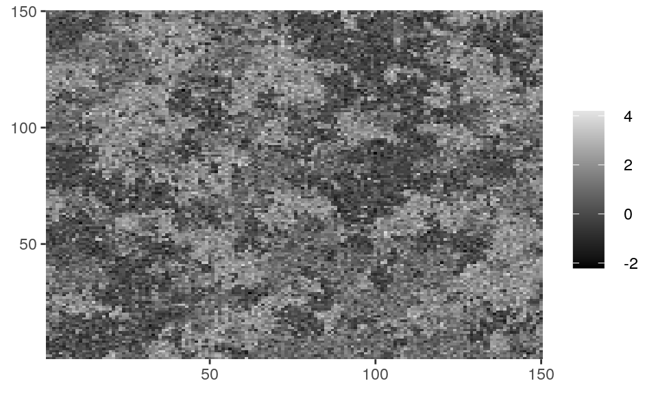
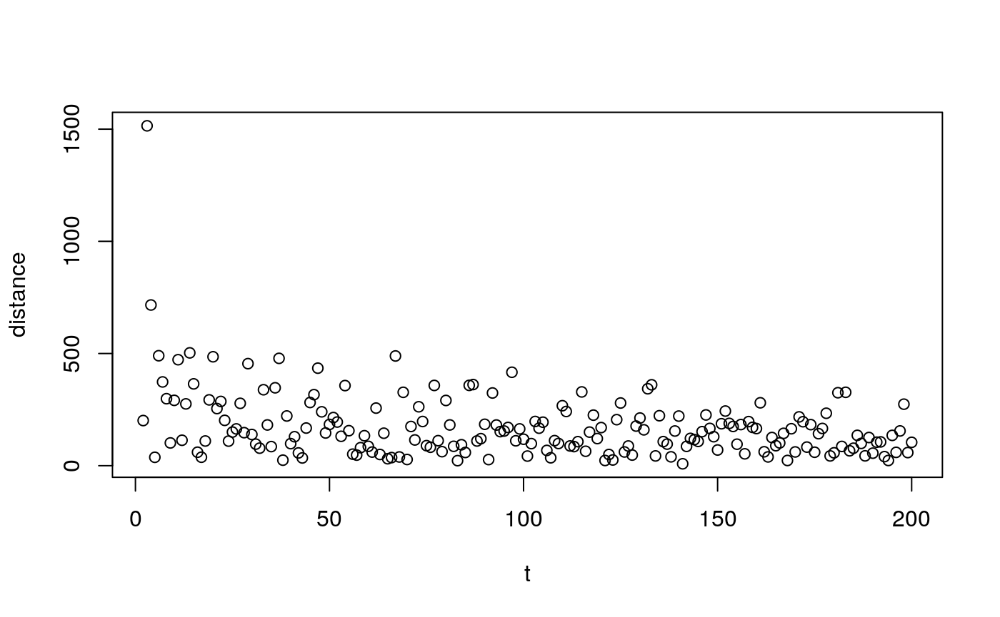

Introduction
A general introduction to Markov Random Fields
Markov Random Fields are probabilistic models used for modeling processes with local dependence. This dependence can be described by a graph \(\mathcal{G} = (\mathcal{V}, \mathcal{N})\), where \(\mathcal{V}\) is a set of vertices and \(\mathcal{N}\) a neighborhood system. A set of random variables \(\mathbf{Z} = \{Z_i, i \in \mathcal{V} \}\) is called a Markov Random Field with respect to the neighborhood system \(\mathcal{N}\) if
\[ P(Z_i = z_i | \{ Z_j, j \neq i \}) = P(Z_i| \{ Z_j, j \in \mathcal{N}_i \}), \] where \(\mathcal{N}_i\) denotes the neighbors of \(i\) according to \(\mathcal{N}\).
If and only if the above equality holds for each \(i \in \mathcal{V}\), under some additional technical conditions, the joint distribution of \(\mathbf{Z}\) is given by a Gibbs distribution of the form \[ P(\mathbf{Z} = \mathbf{z}) = \frac{1}{\zeta} \exp \left( \sum_{q \in Q(\mathcal{N})} g_q(\mathbf z_q) \right),\] where \(\mathcal{Q}(\mathcal{N})\) denotes the set of cliques (fully connected subsets) of \(\mathcal{N}\) and \(g_q\) are arbitrary functions and \(\zeta\) is a normalization constant (often called “partition function”).
While having a general form of probability measure for local dependent processes is a good start, specific cases with different choices of \(g_q\)’s, \(\mathcal{V}\) and \(\mathcal{N}\) may lead to completely different models which statistical analysis should be carried differently. mrf2d provides tools for a specific, yet large, class models usually present in an image processing context: Two-dimensional lattices.
A spatially stationary MRF model for 2-dimensional lattices
The model adopted in mrf2d has the following assumptions:
\(\mathcal{V} = \mathcal{L} = \{ i = (i_x, i_j): 1 \leq i_x \leq N; 1 \leq i_y \leq M \}\): The data points (called pixels) are indexed by a retangular lattice \(\mathcal{L}\) of dimension \(N \times M\).
\(\mathcal{N}\) is determined by a set of relative positions \(\mathcal{R}\): There is an edge connecting two pixels \(i\) and \(j\) if and only if their relative position \((i_x, i_y) - (j_x, j_y)\) is in \(\mathcal{R}\). As an example, if \(\mathcal{R} = \{ (1,0), (0,1) \}\), pixels are connected to their nearest neighbors horizontally and vertically, which can be represented by the structure below. Note the opposite directions have edges but they are not included in \(\mathcal{R}\) to avoid redundancy.

\[ P_\theta(\mathbf{Z} = \mathbf{z}) = \frac{1}{\zeta_\theta} \exp \left( \sum_{i \in \mathcal{L}} \sum_{j = i + r}^{r \in \mathcal{R}} \theta_{z_i, z_j, r} \right) \]
\[ P_\theta(\mathbf{Z} = \mathbf{z}) = \frac{1}{\zeta_\theta} \exp \left( \sum_{r \in \mathcal{R}} \sum_{a,b = 0}^C \theta_{a,b,r} n_r(a,b) \right) \] \(n_r(a,b) = \sum_{i \in \mathcal{L}} \mathbb{1}(z_i = a, z_{i+r} = b)\)
The mrf2d package
mrf2d has the goal to provide tools for analysis of Markov Random Fields on two-dimensional lattices, mainly, by defining a well-designed representation of the interaction structure, as well as parameters sets with different types of restrictions. It also exports efficient implementations of the most commom estimation methods and a sampling function, making it easy to implement new or specific algorithms with little effort taking advantage of the the package’s API.
Computational efficiency is also a feature of the package, having most of the high-cost core functions written with Rcpp backend and representations thoughtfully designed for high performance.
The package also provides plotting functions dplot() and cplot() that automatically convert matrix objects to appropriate data.frame structures and creates ggplot objects from it. These functions aim to provide easy to use methods of visualization but also take advantage of ggplot2’s grammar to modify aesthetics and create elegant and customizable visualizations of lattice data. dplot() should be used for discrete data while cplot() is suitable for continuous data.
class(Z_potts)
#> [1] "matrix"
unique(as.vector(Z_potts))
#> [1] 0 1 2
dplot(Z_potts, legend = TRUE)


The mrfi class and parameter arrays
The stationary Markov Random Fields described are completely specified by the set of relative positions where interactions exists \(\mathcal{R}\) and the interaction parameters \(\theta_{a,b,r}\), \((a,b) \in \{0,\dots,C \}^2, r \in \mathcal{R}\).
In mrf2d, interaction structures \(\mathcal{R}\) are represented by objects of the S4 class mrfi, while interaction parameters are reprensted by simple 3-dimensional arrays, where theta[a,b,k] contains the value of \(\theta_{a,b,r}\) for the \(k\)-th relative position. As an example, in a nearest-neighbor structure (\(|\mathcal{R}| = 2\)) with \(C = 1\), where the interaction for equal values (\(a=b\)) is 0 and -0.99 for different values, the corresponding array would be
mrf2d:::vec_to_array(-0.99, "onepar", 1, 2)
#> , , 1
#>
#> 0 1
#> 0 0.00 -0.99
#> 1 -0.99 0.00
#>
#> , , 2
#>
#> 0 1
#> 0 0.00 -0.99
#> 1 -0.99 0.00Note how rows represents values \(a\), columns are values of \(b\) and slices are the relative positions in \(\mathcal{R}\).
Creating mrfi objects
mrfi objects can be created with the mrfi() function. It takes three parameters: max_norm, norm_type and positions. max_norm and norm_type combined define a region where interactions are included. As example, if max_norm is 3 and norm_type is "1", the interaction structure will include relative positions \(r\) where \(|r_x| + |r_y| \leq 3\).
Note that opposite positions, e.g., \((1,0)\) and \((-1,0)\) are not both included, as the second one is always redundant for the model. A plot() method is available to visualize mrfi objects.
Parameter restriction families
family 'onepar'
The interaction depends only if the pair of values is equal or different and not on their values or relative position. Since we set \(\theta_{0,0,r} = 0\), this simplifies as:
\[ \theta_{a,b,r} = \theta \mathbb{1}_{[a \neq b]} \]
Example of valid array for 'onepar':
#> , , 1
#>
#> 0 1 2
#> 0 0.00 -0.01 -0.01
#> 1 -0.01 0.00 -0.01
#> 2 -0.01 -0.01 0.00
#>
#> , , 2
#>
#> 0 1 2
#> 0 0.00 -0.01 -0.01
#> 1 -0.01 0.00 -0.01
#> 2 -0.01 -0.01 0.00
family 'oneeach'
The same as 'onepar', but allowing different values for different relative positions \(r\), resulting a total of \(|\mathcal{R}|\) free parameters:
\[ \theta_{a,b,r} = \theta_r \mathbb{1}_{[a \neq b]} \]
Example of valid array for 'oneeach':
#> , , 1
#>
#> 0 1 2
#> 0 0.00 -0.01 -0.01
#> 1 -0.01 0.00 -0.01
#> 2 -0.01 -0.01 0.00
#>
#> , , 2
#>
#> 0 1 2
#> 0 0.00 -0.02 -0.02
#> 1 -0.02 0.00 -0.02
#> 2 -0.02 -0.02 0.00
family 'absdif'
The values with equal absolute differences (\(|b-a|\)) are kept constant within each relative position, resulting a total of \(|\mathcal{R}| \cdot C\) free parameters. Note that the restriction \(\theta_{0,0,r} = 0\) implies all pairs with absolute difference equals \(0\) will also be null.
\[ \theta_{a,b,r} = \theta_{|b-a|,r} \]
Example of valid array for 'absdif':
#> , , 1
#>
#> 0 1 2
#> 0 0.00 -0.01 -0.02
#> 1 -0.01 0.00 -0.01
#> 2 -0.02 -0.01 0.00
#>
#> , , 2
#>
#> 0 1 2
#> 0 0.00 -0.03 -0.04
#> 1 -0.03 0.00 -0.03
#> 2 -0.04 -0.03 0.00
family 'dif'
The same as 'absdif', but allowing different values for positive and negative differences, i.e., \(\theta_{a,b,r} \neq \theta_{b,a,r}\) for \(a \neq b\). This restriction allows different effects on opposing directions to exist and there are \(|\mathcal{R}| \cdot 2C\)
Note that 'dif' and 'absdif' are typically used when the observed values actually have a quantitative meaning (as the gray levels of images), but not in tasks like image segmentation, where the value describes a class where, usually, the order and therefore differences have no meaning.
\[ \theta_{a,b,r} = \theta_{b-a,r}\]
Example of valid array for 'dif':
#> , , 1
#>
#> 0 1 2
#> 0 0.00 -0.03 -0.04
#> 1 -0.02 0.00 -0.03
#> 2 -0.01 -0.02 0.00
#>
#> , , 2
#>
#> 0 1 2
#> 0 0.00 -0.07 -0.08
#> 1 -0.06 0.00 -0.07
#> 2 -0.05 -0.06 0.00
family 'free'
No additional restriction but the identifiability constraint \(\theta_{0,0,r} = 0\) is still necessary. \(|\mathcal{R}| \cdot \left( C^2 + 2C \right)\) free parameters.
Example of valid array for 'free':
#> , , 1
#>
#> 0 1 2
#> 0 0.00 -0.03 -0.06
#> 1 -0.01 -0.04 -0.07
#> 2 -0.02 -0.05 -0.08
#>
#> , , 2
#>
#> 0 1 2
#> 0 0.00 -0.11 -0.14
#> 1 -0.09 -0.12 -0.15
#> 2 -0.10 -0.13 -0.16Parameter estimation on Markov Random Fields
Pseudolikelihood
The concept of pseudolikelihood was introduced in Besag (1975) and consists of using the product of conditional probabilities instead of the joint probability. The pseudolikelihood function \(PL()\) is defined as
\[ PL(\theta;\mathbf{z}) = \prod_{i \in \mathcal{L}} P(Z_i = z_i | \mathbf{Z}_{\mathcal{N}_i} = \mathbf{z}_{\mathcal{N}_i}).\]
In the lattice model defined, this is described by
\[ PL(\theta;\mathbf{z}) = \prod_{i \in \mathcal{L}} \frac{\exp{\left( \sum_{r \in \mathcal{R}} \theta_{z_i, z_{i+r},r} + \theta_{z_{i-r}, z_i,r} \right)}}{\sum_{a = 0}^C\exp{\left( \sum_{r \in \mathcal{R}} \theta_{a, z_{i+r},r} + \theta_{z_{i-r}, a,r} \right)}},\] with \(\theta_{z_i,z_j,a} = 0\) if either \(i\) or \(j\) is out of bounds (i.e. when \(i+c \not \in \mathcal{L}\)). This restriction keeps the expression above well-defined for pixels on the borders of \(\mathcal{L}\).
mrf2d’d function pl_mrf2d() computes the (log-scale) pseudolikelihood function for a given observed lattice \(\mathbf{z}\), \(\theta\) and interaction structure.
pl_mrf2d(Z = Z_potts, mrfi = mrfi(1), theta = array(0, dim = c(3,3,2)))
#> [1] -24718.78
pl_mrf2d(Z = Z_potts, mrfi = mrfi(1), theta = array(diag(3) -1, dim = c(3,3,2)))
#> [1] -10708.08
pl_mrf2d(Z = Z_potts, mrfi = mrfi(1), theta = array(1 - diag(3), dim = c(3,3,2)))
#> [1] -75849.79Parameter estimation can be performed, therefore, by maximizing the pseudolikelihood function. Maximum Pseudolikelihood Estimators (MPLEs) are comparable to Maximum Likelihood Estimators (MLEs) when the dependence is not too strong and can be computed in mrf2d with the function fit_pl().
fit_pl(Z_potts, mrfi(1), family = "onepar")
#> $theta
#> , , 1
#>
#> 0 1 2
#> 0 0.0000000 -0.9906675 -0.9906675
#> 1 -0.9906675 0.0000000 -0.9906675
#> 2 -0.9906675 -0.9906675 0.0000000
#>
#> , , 2
#>
#> 0 1 2
#> 0 0.0000000 -0.9906675 -0.9906675
#> 1 -0.9906675 0.0000000 -0.9906675
#> 2 -0.9906675 -0.9906675 0.0000000
#>
#>
#> $value
#> [1] -10707.56
fit_pl(Z_potts, mrfi(1), family = "oneeach")
#> $theta
#> , , 1
#>
#> 0 1 2
#> 0 0.0000000 -0.9635956 -0.9635956
#> 1 -0.9635956 0.0000000 -0.9635956
#> 2 -0.9635956 -0.9635956 0.0000000
#>
#> , , 2
#>
#> 0 1 2
#> 0 0.000000 -1.017917 -1.017917
#> 1 -1.017917 0.000000 -1.017917
#> 2 -1.017917 -1.017917 0.000000
#>
#>
#> $value
#> [1] -10705.05Stochastic Approximation
Stochastic Approximation is an algorithm for finding a (concave) function’s maximum value without the need to evaluate it. Instead, it iteratively moves a solution in the gradient’s direction
The likelihood function of the MRF defined above belongs to the exponential family and can be written as
\[ l(\theta;\mathbf{z}^0) = (S(\mathbf{z}^0) \bullet \theta) - \log(\zeta_\theta),\] where \(\bullet\) denotes the dot product and \(S(\mathbf{z})\) is the vector sufficient statistics. Therefore, the global maximum is the point where the gradient \(\frac{\partial}{\partial \theta} l(\theta;\mathbf{z}^0)\) is equal to zero, and the gradient is given by \[\frac{\partial}{\partial \theta} l(\theta;\mathbf{z}^0) = S(\mathbf{z}^0) - \mathbb{E}_\theta(S(\mathbf{Z})).\]
Starting from an arbitrary configuration \(\theta^{(1)}\), which is considered the null vector by default in mrf2d, the algorithm iteratively samples a field \(\mathbf{z}^{(t)}\) from the current parameter configuration \(\theta^{(t)}\) and then updates \(\theta^{(t+1)}\) according to an estimated gradient direction in the following recursion \[ \theta^{(t+1)} = \theta^{(t)} + \gamma^{(t)} \left( S(\mathbf{z}^0) - S(\mathbf{z}^{(t)}) \right).\]
Some notes and details about mrf2d’s implementation of the Stochastic Approximation algorithm (function fit_sa()):
- Exact sampling from a MRF either has a high computational cost or is an intractable problem, therefore, iterative methods (here, the Gibbs Sampler) are used. Since these methods may take a large number of cycles to reach the equilibrium distribution, the last sampled field is cached and used as an initial value for the next sample, with a smaller number of cycles between interactions. This was used for example in Gimel’farb (1996).
- Two additional parameters are used in our implementation:
refresh_eachandrefresh_cycles. If specified, the sampled field \(\mathbf{z}^t\) will be completely reset eachrefresh_eachiterations. Whenever the field is reset, a new one will be sampled from a random initial configuration and a number of cycles equals torefresh_cycles, which should typically be a large value. Extreme cases arerefresh_each = 1, where a completely new field is generated in each iteration (very slow) andrefresh_eachlarger than the number of iterations (function’s defaults), which means no refresh will ever happen. - The algorithm requires the theoretical restrictions \(\sum_t \gamma^{(t)} = +\infty\) and \(\sum_t \left(\gamma^{(t)}\right)^2 < +\infty\). Since in practice only a finite number of iterations is executed, the choice of the \(\gamma^{(t)}\) sequence requires some tuning to improve the results obtained.
- The sequence \(\gamma^{(t)}\) is specified by the parameter
gamma_seq, but the values are divided bylength(Z). This standardizes the notion of what is a “small” or “large” value for the step size regardless of the lattice dimensions. - A
data.framecontaining the distances \(|| \mathbf{z}^0 - \mathbf{z}^{(t)} ||^2_2\) is returned in themetricsfield. It can be used to monitor the convergence of the algorithm.
set.seed(1234)
sa_onepar <- fit_sa(Z_potts, mrfi(1), family = "onepar",
gamma_seq = seq(3, 0, length.out = 200))
sa_onepar$theta
#> , , 1
#>
#> 0 1 2
#> 0 0.0000000 -0.9909923 -0.9909923
#> 1 -0.9909923 0.0000000 -0.9909923
#> 2 -0.9909923 -0.9909923 0.0000000
#>
#> , , 2
#>
#> 0 1 2
#> 0 0.0000000 -0.9909923 -0.9909923
#> 1 -0.9909923 0.0000000 -0.9909923
#> 2 -0.9909923 -0.9909923 0.0000000
sa_oneeach <- fit_sa(Z_potts, mrfi(1), family = "oneeach",
gamma_seq = seq(3, 0, length.out = 200))
sa_oneeach$theta
#> , , 1
#>
#> 0 1 2
#> 0 0.0000000 -0.9649173 -0.9649173
#> 1 -0.9649173 0.0000000 -0.9649173
#> 2 -0.9649173 -0.9649173 0.0000000
#>
#> , , 2
#>
#> 0 1 2
#> 0 0.000000 -1.012101 -1.012101
#> 1 -1.012101 0.000000 -1.012101
#> 2 -1.012101 -1.012101 0.000000
plot(sa_oneeach$metrics[2:200,])
Bibliography
Besag, Julian. 1975. “Statistical Analysis of Non-Lattice Data.” Journal of the Royal Statistical Society: Series D (the Statistician) 24 (3). Wiley Online Library: 179–95.
Gimel’farb, Georgy L. 1996. “Texture Modeling by Multiple Pairwise Pixel Interactions.” IEEE Transactions on Pattern Analysis and Machine Intelligence 18 (11). IEEE: 1110–4.
Wikipedia. 2019a. “Pseudolikelihood.” https://en.wikipedia.org/wiki/Pseudolikelihood.
———. 2019b. “Stochastic Approximation.” https://en.wikipedia.org/wiki/Stochastic_approximation.
Zhang, Yongyue, Michael Brady, and Stephen Smith. 2001. “Segmentation of Brain Mr Images Through a Hidden Markov Random Field Model and the Expectation-Maximization Algorithm.” IEEE Transactions on Medical Imaging 20 (1). Ieee: 45–57.